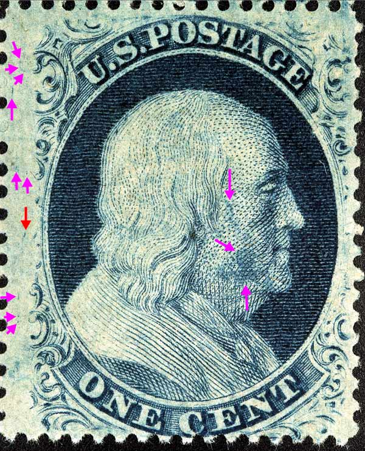
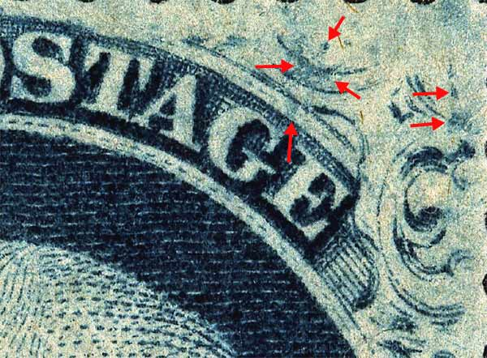
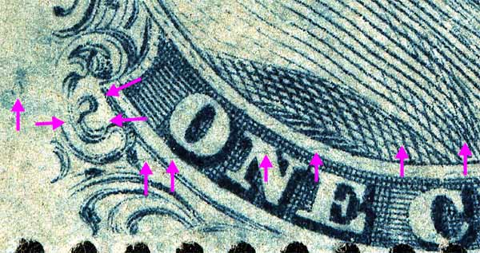
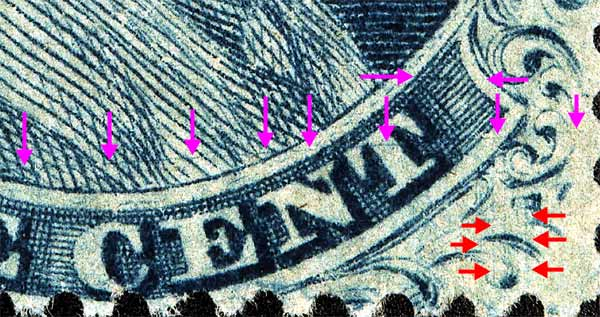

1¢ Franklin Issue of 1857-1861, PLATE 8 Pos 45R8, (Scott #24) |
| Scott #24 Blue, Type V, Relief E Issued only Perforate. UNUSED BLOCK OF 10 CONSISTING OF 32, 33, 34, 35, 42, 43, 44, 45, 52, 53R8. The violet arrows below indicate scratches and marks of interest not shown in the plating daigrams.The red |
|  |
| FIGURE 1. (Below) Plating marks as shown on plating diagram.
 |
| FIGURE 2. (Below) Violet arrows pointing to several horizontal scratches and blurs of color not shown on the Neinken plating diagrams..
 |
| FIGURE 2. (Below) Violet and red arrows pointing to scratches and blurs of color not shown on the Neinken plating diagrams.
 |
DISCLAIMER and COPYRIGHT INFORMATION: Thanks for visiting this site. I hope you learn something new as we are making new discoveries all the time. You, the visitor, have my permission to link to my pages and to share the INFORMATION with others. The images themselves fall under the fair use guidelines established by the United States Congress and Copyright law. Basically contact us before using. I also ask in return that you send me an e-mail if I have made a mistake, or have made some other technical blunder that in my rush to put these pages up would cause the visitor confusion. Please also visit my other website at www.slingshotvenus.com. and support the live music arts. While your there, be sure to purchase our music. There are not many philatelic rock stars around and we need all the help we can get. :-) I can be reached at: nerdman@ix.netcom.com Update 12/18/07 |